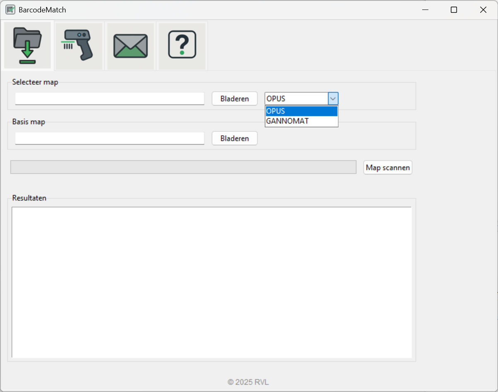
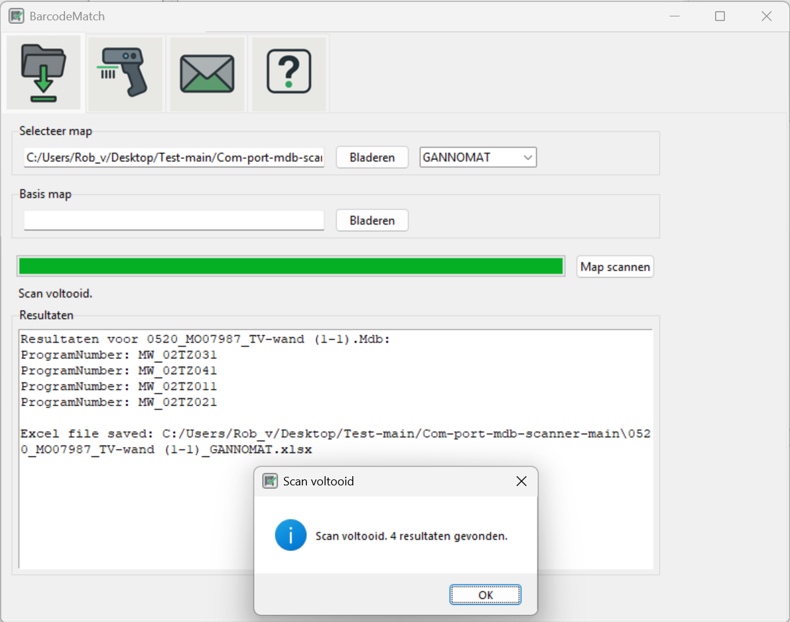
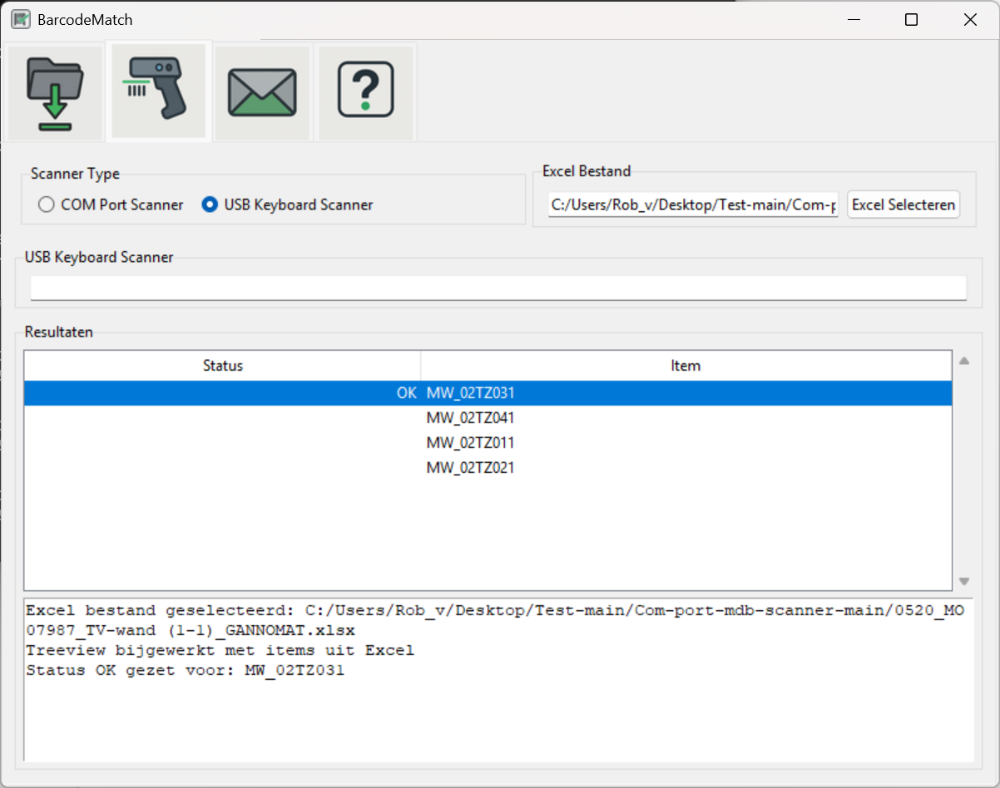

BarcodeMatch is een geavanceerde tool voor het scannen, vergelijken en automatiseren van barcodes, Excel- en MDB-bestanden. Deze handleiding behandelt elk tabblad en alle functies tot in detail.
Starten van het programma
Menu: Importeren
Mapselectie
Scanmodus kiezen
Basis map instellen
Scannen starten
Voortgangsbalk en status
Resultatenvenster
Menu: Scanner
COM-poort selectie
Scanner type kiezen
Automatische verwerking
Menu: Email
E-mail inschakelen
E-mailinstellingen invullen
Test e-mail verzenden
Email Verzenden
Instellingen en Configuratie
Opslaan en laden van instellingen
Veelgestelde vragen
Dubbelklik
op BarcodeMatch.exe
of voer uit via de terminal:
python scanner.pyHet hoofdvenster verschijnt.
Het tabblad Importeren is bedoeld voor het selecteren en voorbereiden van de gegevensbron.
Kies uit het dropdownmenu:
OPUS: voor .hop/.hops-bestanden.
GANNOMAT: voor .mdb-bestanden.
De keuze bepaalt hoe bestanden worden verwerkt.
Scanmodus dropdown

Klik op Bladeren naast het veld “Selecteer map”.
Kies de map met te scannen bestanden (Hops, MDB).
Het pad wordt weergegeven in het tekstveld.
Onder 'Basis map' kun je het mappad selecteren dat níet wordt meegenereerd, maar nodig is om de juiste code te verkrijgen die we gebruiken om barcodes te vergelijken.
Klik op Bladeren om de basis map te kiezen.
Klik op Map scannen om het scanproces te starten.
De voortgangsbalk toont de status.
Het statuslabel geeft meldingen of fouten weer.
Na het scannen verschijnen de resultaten in het tekstvak onderaan.
Hier zie je:
Succesvolle matches
Fouten of ontbrekende gegevens
Eventuele waarschuwingen
Resultatenvenster

Het tabblad Scanner is bedoeld voor het instellen en gebruiken van een barcodescanner.
Kies het type scanner (indien ondersteund).
Selecteer het gegenereerde bestand.
Het bestand zal hierna automatisch geladen worden in het Resultaten venster.
Wanneer de scanner actief is, worden gescande barcodes automatisch verwerkt.
Resultaten worden direct weergegeven in het resultatenvenster.
Eventuele fouten of onbekende codes worden gemeld.
S canner in actie
Hier stel je e-mailmeldingen in voor automatische rapportage of foutmeldingen.
Vink E-mail inschakelen aan om e-mailfunctionaliteit te activeren.
Velden worden nu bewerkbaar.
Afzender: Vul het e-mailadres van de afzender in.
Ontvanger: Vul het e-mailadres van de ontvanger in.
SMTP-server: Vul het adres van de uitgaande mailserver in.
Poort: Standaard 587 (voor TLS).
Gebruikersnaam en Wachtwoord: Voor SMTP-authenticatie.
Klik op Test e-mail om een testbericht te sturen.
Je krijgt een melding of het gelukt is.
Je hebt hier twee mogelijkheden: dagelijks een lijst mailen met afgewerkte projecten, of na elk afgewerkt project afzonderlijk een mail sturen.
Alle
instellingen (mappen, e-mail, scanmodus, etc.) worden bewaard
in config.json.
Bij
het opstarten worden deze automatisch geladen.
Je kunt dit bestand handmatig bewerken voor geavanceerde instellingen.
Vraag: Het programma vindt mijn scanner
niet.
Antwoord: Controleer of de scanner
goed is aangesloten en de juiste COM-poort is geselecteerd.
Vraag: De e-mail werkt
niet.
Antwoord: Controleer
SMTP-instellingen en probeer de testmail opnieuw.
Vraag: Het scannen levert geen resultaten
op.
Antwoord: Controleer of de juiste map
en scanmodus zijn geselecteerd en of de bestanden aanwezig zijn.
|
|
|
|
|
|
|
|
|
|
|
|
|
|
|
|
|
|
|
|
|
|
|
|
|
|
|
|
|
|
|
|
|
|
|